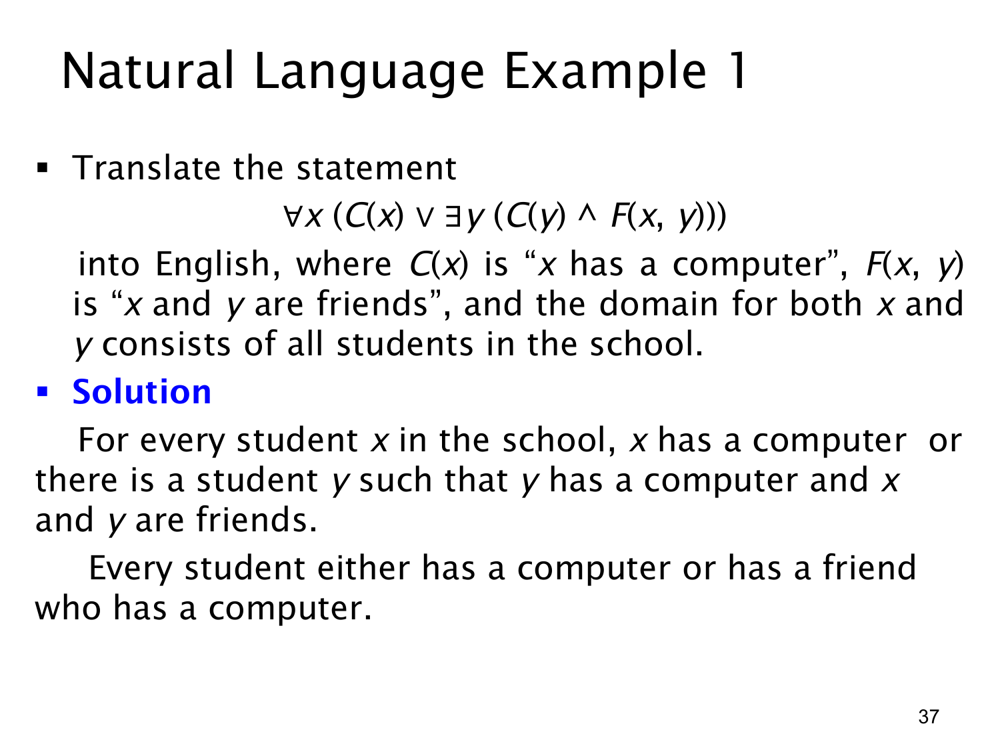

L1.2 · 第 37 页讲解原文
查看这一页课件

从嵌套量词翻译为自然语言：电脑与朋友
这页给出公式
∀x(C(x)∨∃y(C(y)∧F(x,y))),
其中论域是学校里的所有学生；C(t) 表示“学生 t 有电脑”，F(x,y) 表示“x 与 y 是朋友”。要准确翻译，按量词与括号从外向内读。
首先，∀x 表示“每一位学生 x 都要满足括号里的条件”。括号中的“或”给出两种满足方式：第一种是这位学生自己有电脑，即 C(x)；第二种是存在一位学生 y，这个 y 有电脑，且 x 与 y 是朋友，即 ∃y(C(y)∧F(x,y))。
合起来可译为：学校里每位学生要么自己有电脑，要么有一位拥有电脑的朋友。 这里的 y 可以因 x 而异，不要求全校学生共享同一位有电脑的朋友。存在分支中的 C(y) 与 F(x,y) 必须由同一个 y 同时满足；不能找一个有电脑的人，再另找一个朋友，便认为条件成立。
若某位学生自己已有电脑，公式的第一分支已经为真，不必再证明他或她还有这样的朋友。逻辑“或”允许两边同时为真，所以学生既有电脑又有有电脑的朋友也符合公式。这些细节都来自量词作用域与括号的位置。